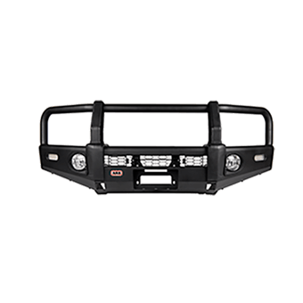

Equipamiento, repuestos y accesorios para tu vehiculo

Si bien la mayoría de los vehículos tienen incorporado un parachoque que
proporciona auxilio ante ciertas colisiones, las defensas para camionetas
son un componente que no sólo agregan una mayor seguridad y distinción, sino
que también otorgan mayor libertad a la hora de conducir. Por tal razón, se
indagará en las mejorías que estas firmes estructuras de protección aportan
a las camionetas.
Absorción del impacto en la zona delantera
Proteger el vehículo ante choques es una función necesaria para las faenas mineras,
sobre todo si se recorren terrenos donde los agentes que puedan dañar el auto son
diversos. Por esto, las defensas para camionetas son el complemento perfecto para
resguardar la estructura y componentes internos que requieren de mayor cuidado
como focos y motor.
Mejor soporte para faros
Además de la capacidad de reacción, uno de los puntos cruciales al conducir es,
sin duda, la visión. Por lo tanto, la defensa camioneta es un buen lugar para
la colocación de dispositivos de iluminación. Debido a la extensión y estabilidad
de la estructura, nuevos faros pueden ser agregados para aumentar el rango de
visibilidad en zonas oscuras y donde los focos del propio vehículo no otorguen
la visión necesaria para mejorar las aptitudes a la hora de manejar.
Lugar indicado para una corta maleza
Otro factor que puede perjudicar la integridad del vehículo es el entorno,
por ejemplo, las plantas. Debido a que algunas pueden tener características
frondosas o punzantes, las defensas para camionetas facilitan la colocación
de una corta maleza para dispersar los obstáculos que puedan dañar el transporte.
Destacada protección urbana
Si bien las defensa camioneta mejoran la experiencia en zonas intrépidas,
también son un excelente artículo que aumenta la seguridad dentro de la ciudad.
Debido a la congestión y a la rapidez con la que se suele manejar en las urbes,
circunstancias como una rayadura, un choque en estacionamientos, ante un poste o
en un cruce se pueden amortiguar con la firmeza de estos armazones.
Apoyo a zonas delanteras y trasera
Las defensas traseras y delanteras harán que los impactos se reduzcan, incluso
en los puntos ciegos del vehículo. Los parachoques generalmente están hechos de
fierro o plástico poliuretano para resistir la colisión y rebotar la energía.
Algunas defensas solo son colocadas en la parte baja del vehículo, sin embargo,
existen modelos que cubren toda la parte frontal, alcanzando los faros. Estos últimos
son útiles para impactos de mayor dimensión. En el caso de las defensas traseras
tienen como propósito proteger el escape, el sistema de refrigeración, la cajuela y
más.
Ahora bien, aunque el objetivo de las defensas es disminuir los daños físicos de
la camioneta, sus beneficios solo se deben aprovechar para las labores mineras o
industriales. Hasta el momento, son accesorios que no deben perjudicar a terceros
ante eventos de bajo impacto, por lo que existen normas para su instalación en
vehículos de uso diario.
Indiscutiblemente, las defensas para camionetas son accesorios que elevan el rango
de acción y seguridad del vehículo no solo en los terrenos más osados, sino que
también en lugares como la ciudad, donde se requiere mayor cuidado y precisión ante
otros autos.
En este sentido, dichas estructuras brindan seguridad mientras se realizan las faenas
siendo el mejor aliado ante múltiples circunstancias de riesgo.